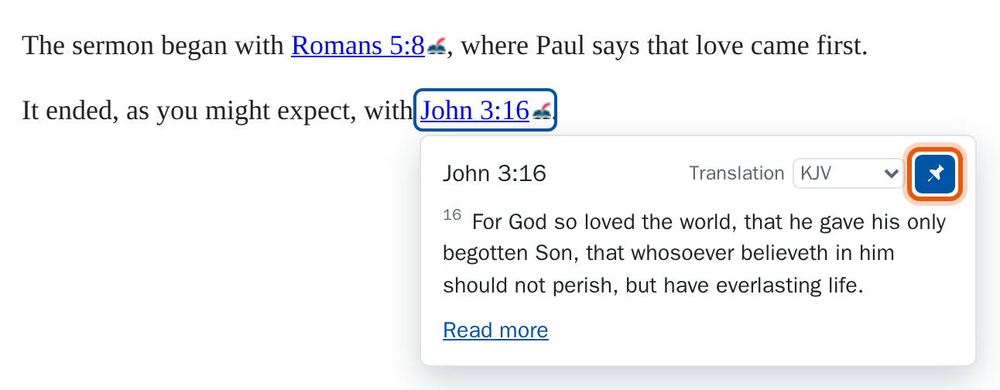

The tooltip normally closes when you move away. Pin it and it stays, so you can read the passage while you write a reply or follow the rest of the page.

Click the pin (its name is Keep open), to the right of the translation menu. While the tooltip is pinned:
Click the pin again, or press Esc while you're in the tooltip or on its link. A tooltip always opens unpinned.